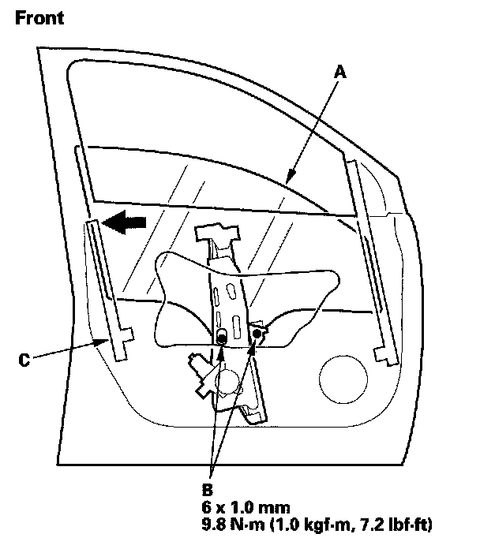
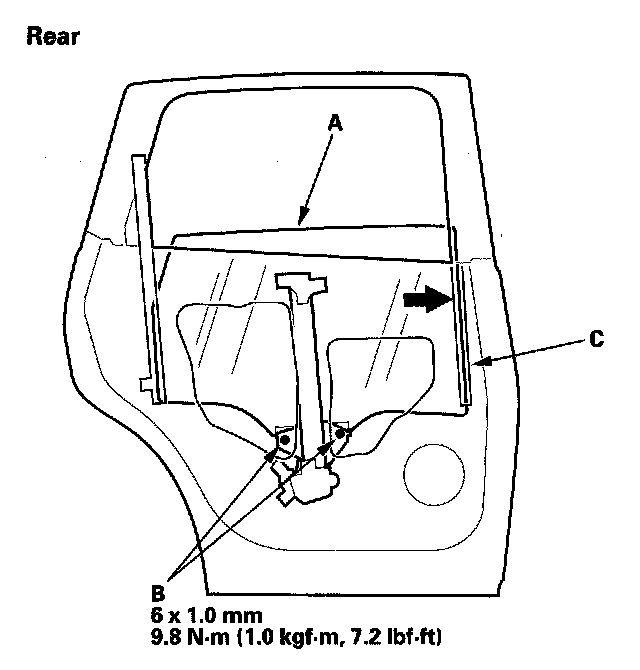
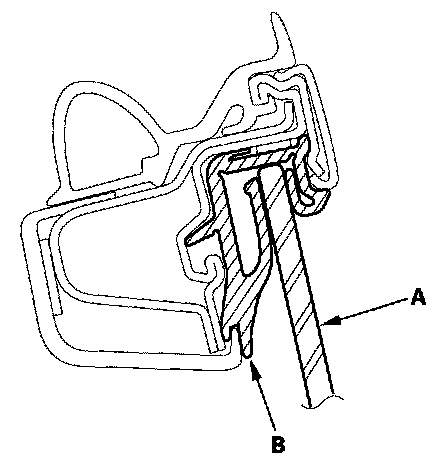
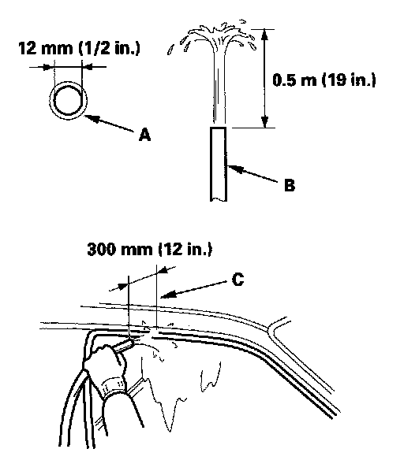

Front Door Window Glass: Adjustments
Front and Rear Door Glass AdjustmentNOTE: Check the weatherstrip and glass run channel for damage or deterioration, and replace them if necessary.
1. Place the vehicle on a firm, level surface.
2. Remove these items:
- Door panel:
- Front door
- Rear door
- Plastic cover:
- Front door.
- Rear door.


3. Carefully move the glass (A) until you can see the glass mounting bolts (B), then loosen them.
4. Push the glass against the channel (C), then tighten the glass mounting bolts.
5. Check that the glass moves smoothly.

6. Raise the glass fully, and check for gaps. Also make sure that the glass (A) contacts the glass run channel (B) evenly.

7. Check for water leaks. Run water over the roof and on the sealing area as shown, and note these items:
- Use a 12 mm (1/2 in.) diameter hose (A).
- Adjust the rate of water flow as shown (B).
- Do not use a nozzle.
- Hold the hose about 300 mm (12 in.) away from the door (C).
8. Attach the plastic cover, making sure it is sealed around its outside perimeter to seal out water, then install the door panel:
- Front door
- Rear door